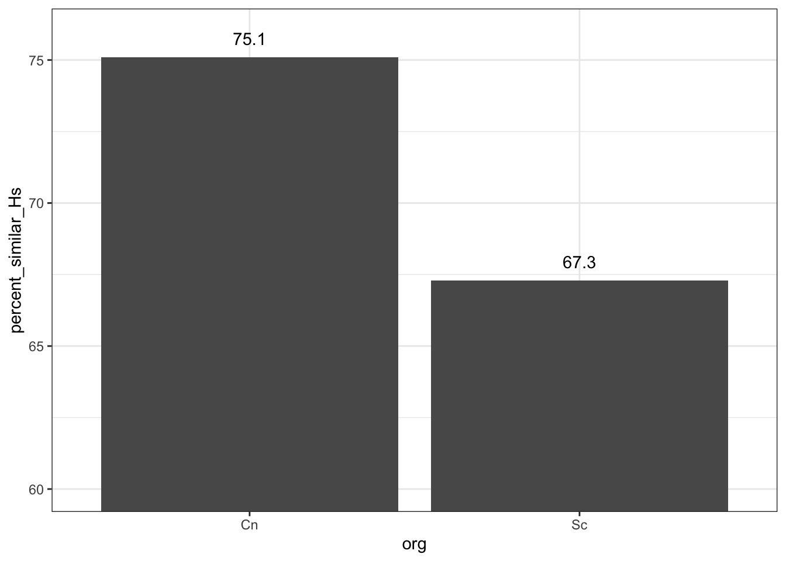
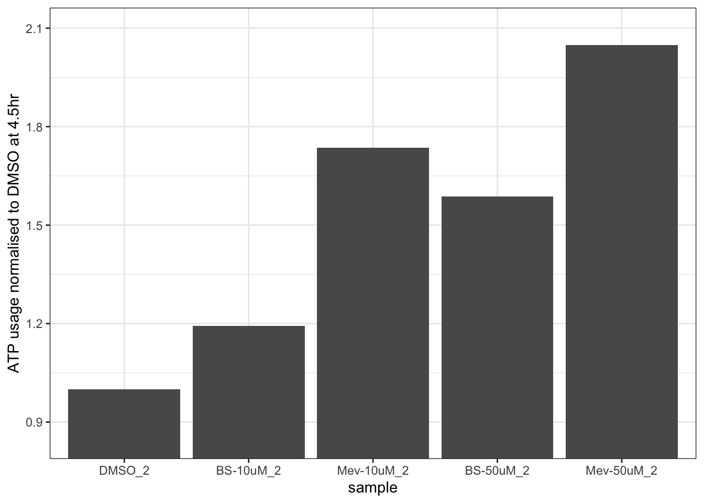
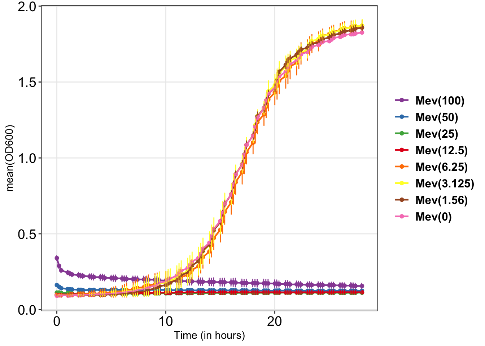
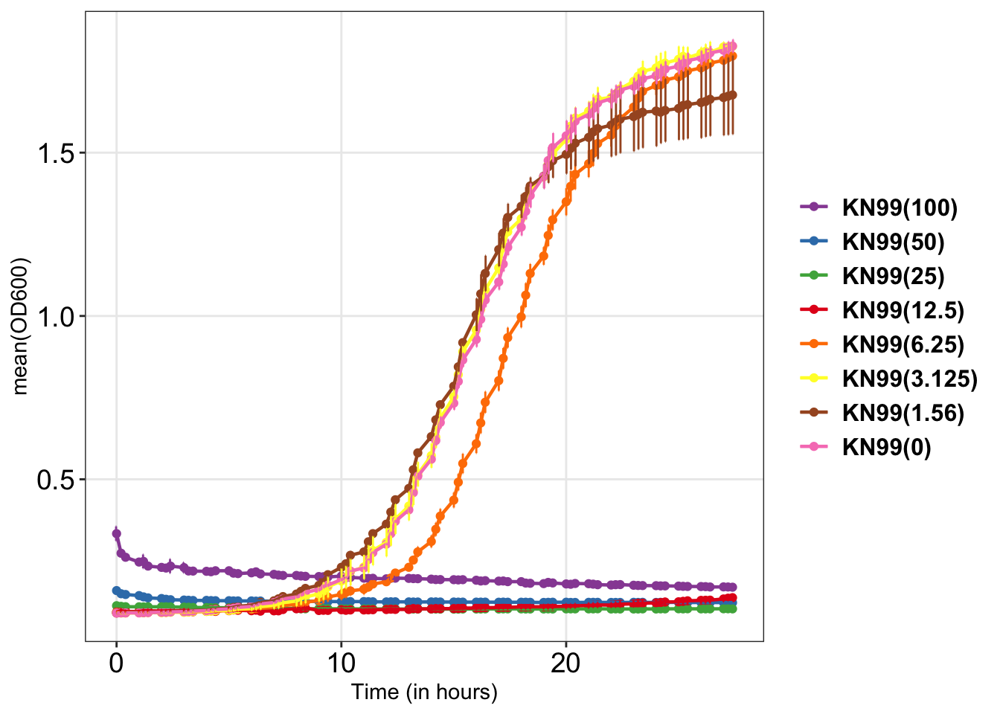
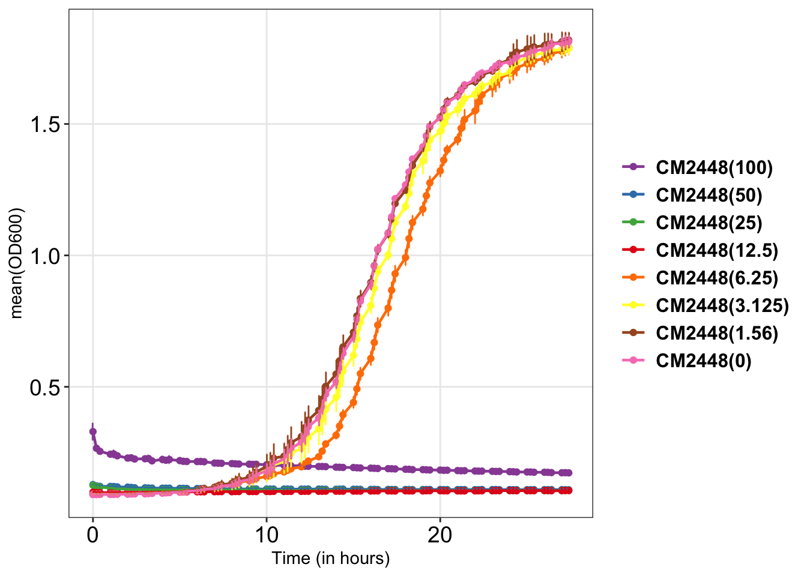
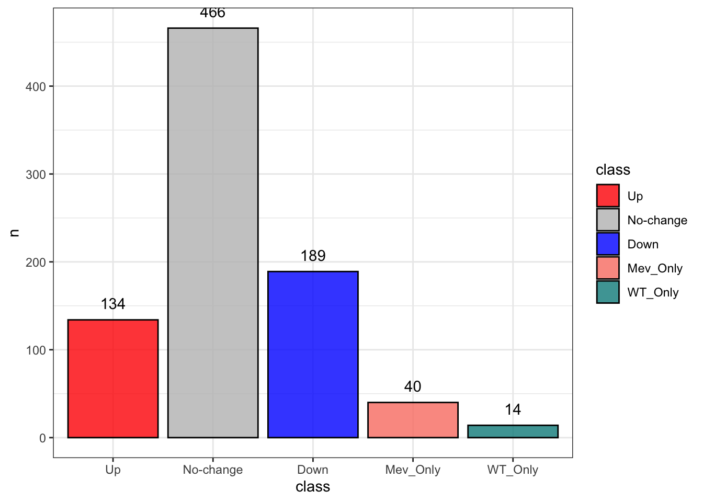
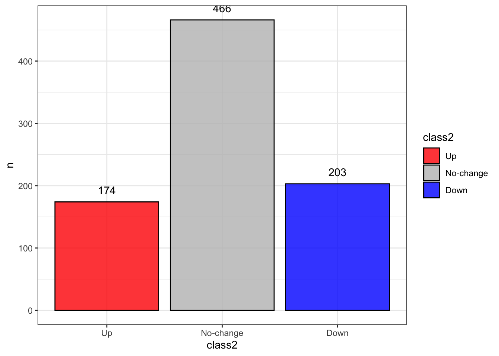
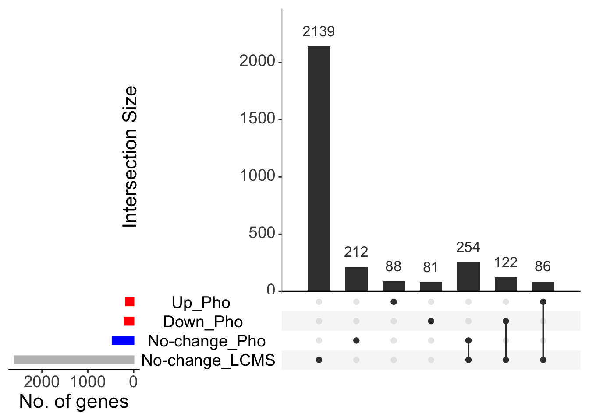
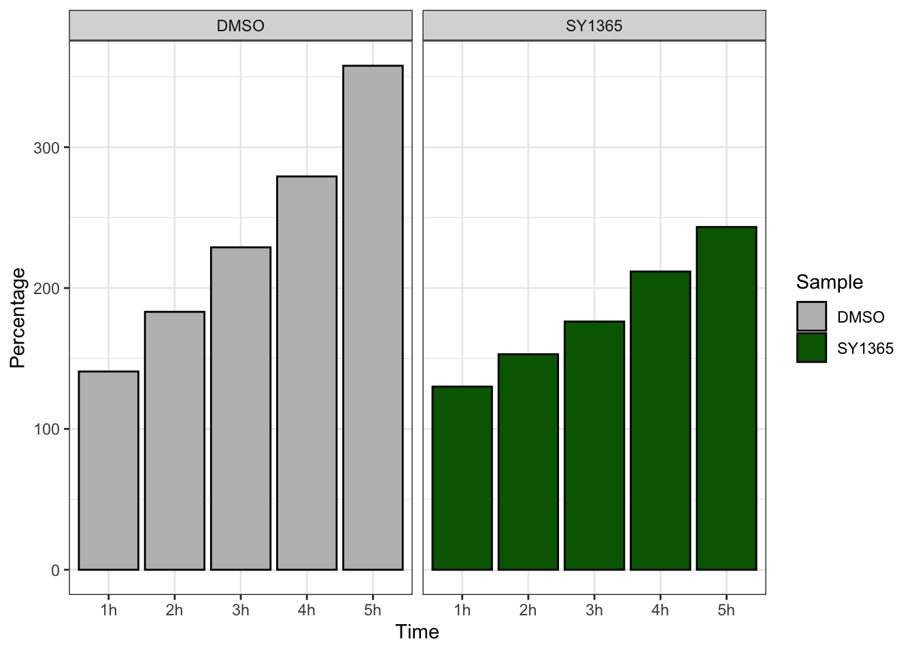

Cdk7_paper_figure
Percent similarity
enzyme assay
Enzyme assay pvalue at last time-point

Dose response curve 2 fold serial dilution (15/10/2024)
Experimental setup
- Cells were grown overnight in YPD media
- OD for O/N cells (OD=28.84) was determined and diluted to OD600 = 0.01/ml in 15ml (6.935µl) fresh YPD.
- Cells were aliquoted in 1ml tubes (14x)
- Mev stock (100mg/ml) and BS181 stock (40mg/ml) was serially diluted in DMSO and cells were treated with 1µl of Mev and 2.5µl of BS181 from each dilution and only DMSO (0µg/ml) as control
- Cells were aliquoted in 96-well plate, 200µl/well.
- Cell growth was monitored by recording OD600 every 20min up-to 40hrs with constant shaking at 800rpm at 30C using Agilent Biotek logphase 600 plate reader
- Cell growth is plotted as Time Vs OD600. Concentration is indicated in the brackets as µg/ml.
H99
Rows: 146 Columns: 69
── Column specification ────────────────────────────────────────────────────────
Delimiter: "\t"
dbl (68): Mev(100)_1, Mev(100)_2, Mev(100)_3, Mev(100)_4, BS181(100)_1, BS1...
time (1): Time
ℹ Use `spec()` to retrieve the full column specification for this data.
ℹ Specify the column types or set `show_col_types = FALSE` to quiet this message.Warning: The `.dots` argument of `group_by()` is deprecated as of dplyr 1.0.0.
ℹ The deprecated feature was likely used in the dplyr package.
Please report the issue at <https://github.com/tidyverse/dplyr/issues>.
Conclusions
- For Mev, 12.5µg/ml is the inhibitory concentration
- For BS181, 50µg/ml concentration shows complete inhibition
- Dose response assay shows that stark but not gradual inhibition in growth at the described concentration
CAK-tag
Rows: 84 Columns: 97
── Column specification ────────────────────────────────────────────────────────
Delimiter: "\t"
dbl (96): KN99(100)_1, KN99(100)_2, KN99(100)_3, CM2444(100)_1, CM2444(100)...
time (1): Time
ℹ Use `spec()` to retrieve the full column specification for this data.
ℹ Specify the column types or set `show_col_types = FALSE` to quiet this message.

Conclusions
- WT-KN99 and Cdk7 tagged strains have MIC of 12.5µg/ml for Mevociclib
- The MIC values are same as Cn H99
- Together results suggests
Irrespective of strain (KN99 or H99) C. neoformans have same MIC for Cdk7 inhibitors
Adding tags to the Cdk7-complex does not alter the growth inhibition in presence of Cdk7 inhibitors
Phospho-proteomics
Phospho-proteomics
phospho_tb <- readr::read_delim("data_files/Phospho_RawData.txt", delim="\t", col_names = TRUE)Rows: 961 Columns: 9
── Column specification ────────────────────────────────────────────────────────
Delimiter: "\t"
chr (5): Accession, Sample_With_1, Sample_With_2, Sample_Without_1, Sample_W...
dbl (4): TotalPeptides, UniquePeptides, Abundances_With, Abundances_Without
ℹ Use `spec()` to retrieve the full column specification for this data.
ℹ Specify the column types or set `show_col_types = FALSE` to quiet this message.phospho_tb <- phospho_tb %>%
dplyr::filter(stringr::str_starts(Accession, "CNAG")) %>%
dplyr::rowwise() %>% # remove rows with no abundance reported
dplyr::filter(!all(is.na(dplyr::c_across(c(Abundances_With, Abundances_Without)))))
# remove rows having peak "Not found" in both the replicate
phospho_tb_mev <- phospho_tb %>%
dplyr::select(c(Accession, Sample_With_1,Sample_With_2)) %>%
dplyr::rowwise() %>%
dplyr::filter(sum(dplyr::c_across(2:3) != "Not Found") == 2) %>%
dplyr::ungroup()
phospho_tb_untreated <- phospho_tb %>%
dplyr::select(c(Accession, Sample_Without_1,Sample_Without_2)) %>%
dplyr::rowwise() %>%
dplyr::filter(sum(dplyr::c_across(2:3) != "Not Found") == 2) %>%
dplyr::ungroup()
# create a combined list of mev and untreated
phospho_combined_list <- dplyr::bind_rows(
phospho_tb_untreated %>% dplyr::select(Accession),
phospho_tb_mev %>% dplyr::select(Accession)
) %>%
dplyr::distinct()
phospho_filtered <- phospho_tb %>%
dplyr::filter(Accession %in% phospho_combined_list$Accession) %>%
dplyr::mutate(LFC = log2(Abundances_With/Abundances_Without),
class=dplyr::if_else(LFC>1, "Up",
dplyr::if_else(LFC< -1, "Down", "No-change"))) %>%
dplyr::mutate(class=dplyr::if_else(is.na(Abundances_Without), "Mev_Only", dplyr::if_else(is.na(Abundances_With), "WT_Only", class)))
Phospho_stats <- phospho_filtered %>%
dplyr::count(class)
Phospho_stats <- tibble::tribble(
~class, ~n,
"Up", 134L,
"No-change", 466L,
"Down", 189L,
"Mev_Only", 40L,
"WT_Only", 14L
)
Phospho_stats %>%
dplyr::mutate(class=forcats::as_factor(class)) %>%
ggplot2::ggplot(ggplot2::aes(class, n, label=n, fill=class))+
ggplot2::geom_col(alpha=0.8, color="black") +
ggplot2::theme_bw()+
ggplot2::geom_text(vjust=-1)+
ggplot2::scale_fill_manual(values=c("red", "gray", "blue", "salmon", "cyan4"))
# combine WT_only to Down and Mev_Only to Up
Phospho_stats_2 <- phospho_filtered %>%
dplyr::mutate(class2=dplyr::if_else(class=="WT_Only", "Down", dplyr::if_else(class=="Mev_Only", "Up", class))) %>% dplyr::count(class2)
Phospho_stats_2 %>% dplyr::ungroup() %>%
dplyr::arrange(desc(class2)) %>%
dplyr::mutate(class2=forcats::as_factor(class2)) %>%
ggplot2::ggplot(ggplot2::aes(class2, n, label=n, fill=class2))+
ggplot2::geom_col(alpha=0.8, color="black") +
ggplot2::theme_bw()+
ggplot2::geom_text(vjust=-1)+
ggplot2::scale_fill_manual(values=c("red", "gray", "blue"))
LCMS
lcms_dat = readr::read_delim("data_files/LCMS_RawData.txt", delim="\t")Rows: 3247 Columns: 10
── Column specification ────────────────────────────────────────────────────────
Delimiter: "\t"
chr (7): Accession, Sample_With_1, Sample_With_2, Sample_With_3, Sample_With...
dbl (3): Unique Peptides, Abundances_With, Abundances_Without
ℹ Use `spec()` to retrieve the full column specification for this data.
ℹ Specify the column types or set `show_col_types = FALSE` to quiet this message.# filter-out rows having "Not found" in atleast 2 of the three replicates
lcms_dat_Mev <- lcms_dat %>%
dplyr::select(c(Accession, Sample_With_1,Sample_With_2,Sample_With_3)) %>%
dplyr::rowwise() %>%
dplyr::filter(sum(dplyr::c_across(2:4) != "Not Found") >= 2) %>%
dplyr::ungroup()
lcms_dat_WT <- lcms_dat %>%
dplyr::select(c(Accession, Sample_Without_1,Sample_Without_2,Sample_Without_3)) %>%
dplyr::rowwise() %>%
dplyr::filter(sum(dplyr::c_across(2:4) != "Not Found") >= 2) %>%
dplyr::ungroup()
combined_genelist <- dplyr::bind_rows(
lcms_dat_WT %>% dplyr::select(Accession),
lcms_dat_Mev %>% dplyr::select(Accession)
) %>%
dplyr::distinct()
lcms_filtered <- lcms_dat %>%
dplyr::filter(Accession %in% combined_genelist$Accession) %>%
dplyr::rowwise() %>%
dplyr::filter(!any(is.na(dplyr::c_across(c(Abundances_With, Abundances_Without))))) %>%
dplyr::filter(stringr::str_starts(Accession, "CNAG")) %>%
dplyr::mutate(LFC = log2(Abundances_With/Abundances_Without),
class=dplyr::if_else(LFC>1, "Up",
dplyr::if_else(LFC< -1, "Down", "No-change")))
LCMS_stats <- lcms_filtered %>%
dplyr::count(class) %>%
dplyr::ungroup() %>%
dplyr::arrange(desc(class)) %>%
dplyr::mutate(class=forcats::as_factor(class))
LCMS_stats %>% ggplot2::ggplot(ggplot2::aes(class, n, label=n, fill=class))+
ggplot2::geom_col(alpha=0.8, color="black") +
ggplot2::theme_bw()+
ggplot2::geom_text(vjust=-1)+
ggplot2::scale_fill_manual(values=c("red", "gray", "blue"))
Compare LCMS and Phospho-proteomics
dat_venn1 <- readr::read_delim("data_files/LCSM_Phosph_VennInput.txt", delim="\t", col_names =TRUE)Warning: One or more parsing issues, call `problems()` on your data frame for details,
e.g.:
dat <- vroom(...)
problems(dat)Rows: 2601 Columns: 4
── Column specification ────────────────────────────────────────────────────────
Delimiter: "\t"
chr (4): No-change_LCMS, No-change_Pho, Down_Pho, Up_Pho
ℹ Use `spec()` to retrieve the full column specification for this data.
ℹ Specify the column types or set `show_col_types = FALSE` to quiet this message.gg_1 = as.list(dat_venn1)
v1 = lapply(gg_1,unique)
clean_list <- lapply(v1, function(x) x[!is.na(x)])
lengths(clean_list)No-change_LCMS No-change_Pho Down_Pho Up_Pho
2601 466 203 174 names(clean_list)=factor(names(clean_list))
upset_venn1 <- UpSetR::upset(UpSetR::fromList(clean_list),
nsets = ncol(dat_venn),
#order.by = c("degree"),
keep.order=TRUE,sets=names(clean_list),
sets.bar.color = c( "grey","blue", "red", "red"),
text.scale=2, sets.x.label = "No. of genes")
print(upset_venn1)
# Convert matrix to tidy format
UpSetR::fromList(clean_list) %>%
dplyr::mutate(gene = rownames(.)) %>%
tidyr::pivot_longer(-gene, names_to = "set", values_to = "present") %>%
dplyr::filter(present == 1) %>%
dplyr::group_by(gene) %>%
dplyr::summarise(sets = paste(sort(set), collapse = ",")) -> gene_intersections
# See genes per intersection
table(gene_intersections$sets)
Down_Pho Down_Pho,No-change_LCMS
81 122
No-change_LCMS No-change_LCMS,No-change_Pho
2139 254
No-change_LCMS,Up_Pho No-change_Pho
86 212
Up_Pho
88 Growth in liquid culture
growth_tube_dt <- tibble::tribble(
~Time, ~DMSO, ~SY1365,
"1h", 140.7514451, 130.0578035,
"2h", 183.1213873, 153.0057803,
"3h", 228.9017341, 176.2427746,
"4h", 279.2196532, 211.734104,
"5h", 357.8034682, 243.3526012,
)
growth_tube_dt %>%
tidyr::gather(Sample, Percentage, -Time) %>%
dplyr::mutate(Sample=forcats::as_factor(Sample)) %>%
ggplot2::ggplot(ggplot2::aes(Time, Percentage, fill=Sample))+
ggplot2::geom_col(color="black")+
ggplot2::theme_bw()+
ggplot2::facet_wrap(~Sample, scales="fixed")+
ggplot2::scale_fill_manual(values=c("grey", "darkgreen","darkblue"))